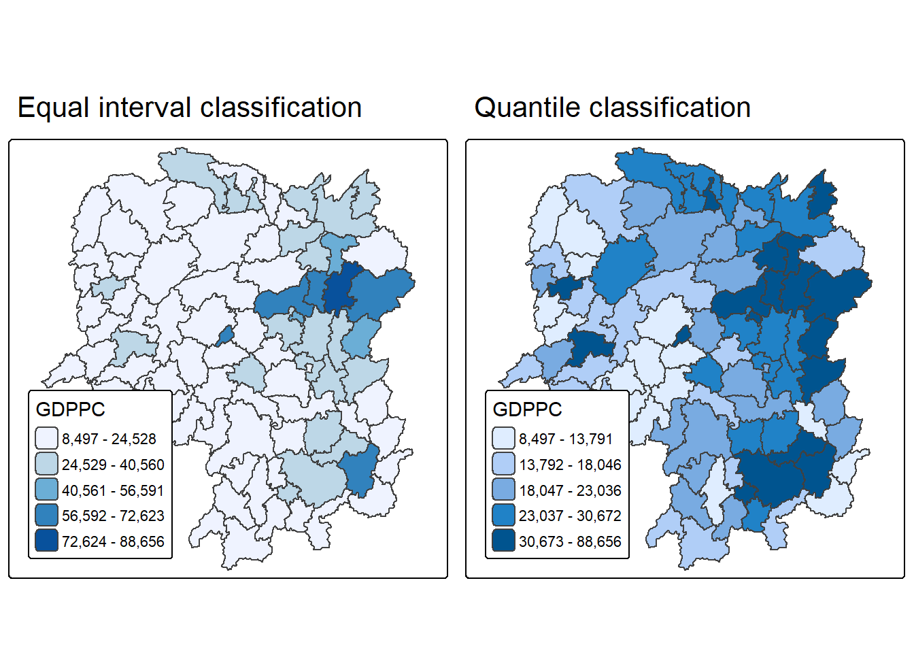
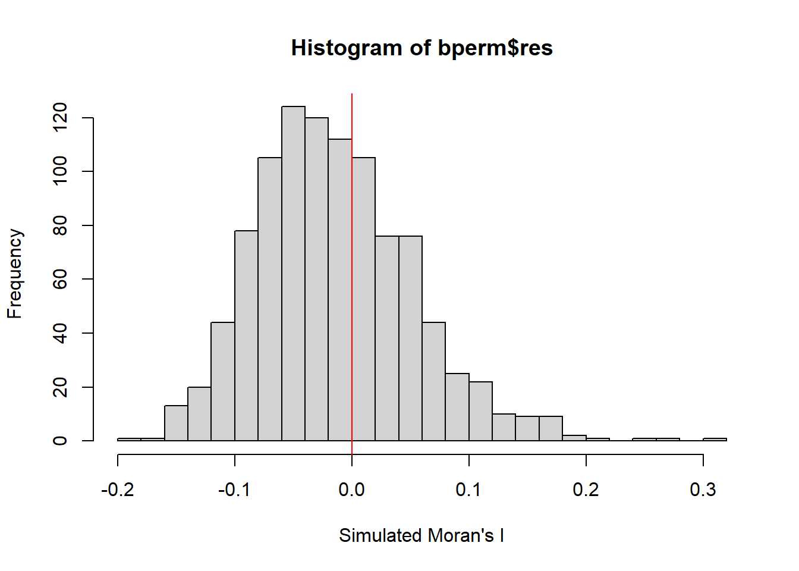
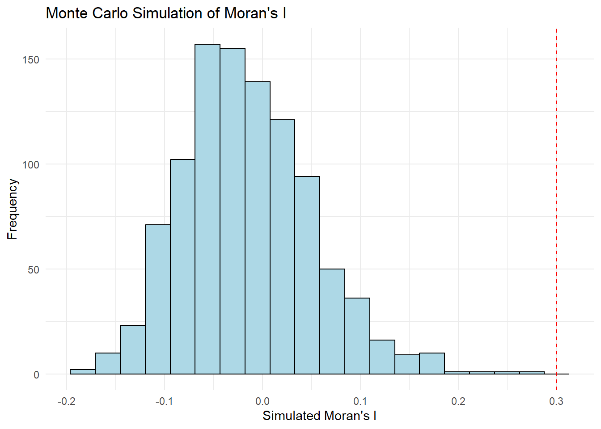
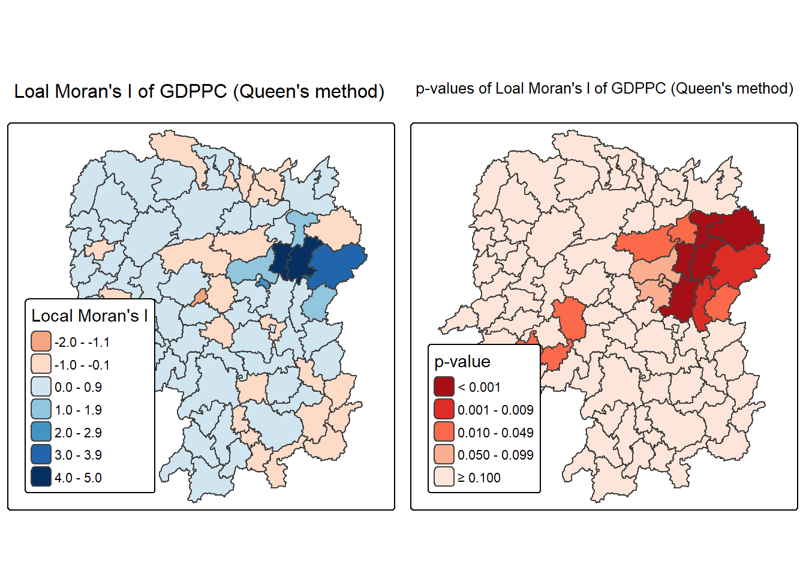
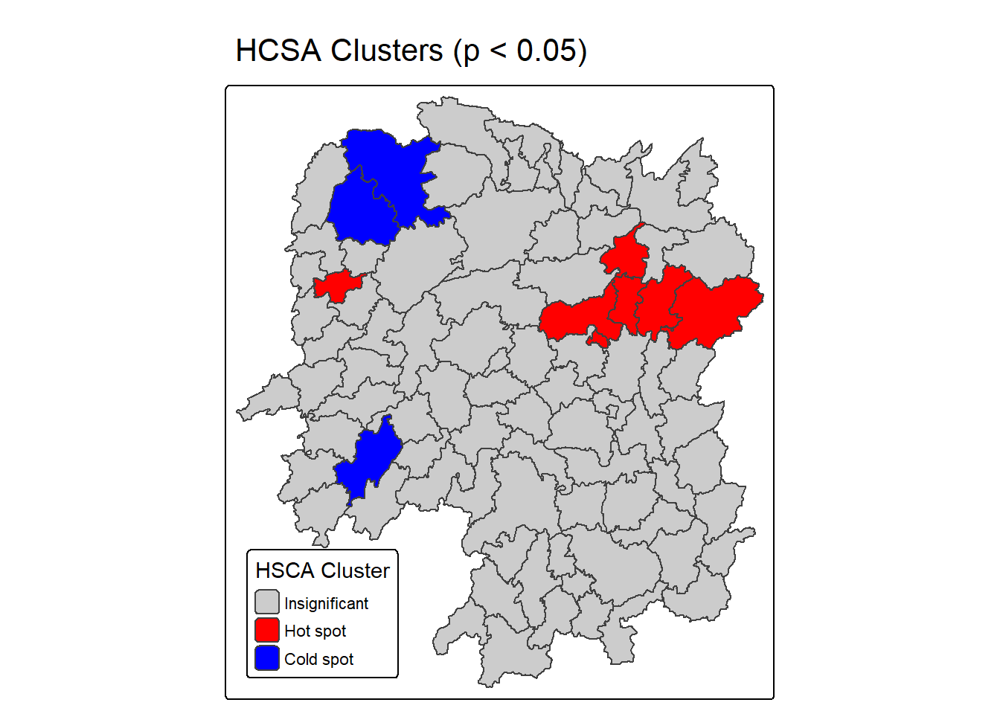

pacman::p_load(sf, spdep, tmap, tidyverse, sfdep)Hands-on Exercise 5
Loading R Packages
5.1 Global Measures of Spatial Autocorrelation
5.1.1 Getting the Data Into R Environment
hunan <- st_read(dsn = "hands-on_ex5_data", layer = "Hunan")Reading layer `Hunan' from data source
`C:\Users\jiayi\Documents\SMU\26_Aug_Term\GAA\lw0170_GAA\ISSS626_course\hands-on_exercise\hands-on_ex5_data'
using driver `ESRI Shapefile'
Simple feature collection with 88 features and 7 fields
Geometry type: POLYGON
Dimension: XY
Bounding box: xmin: 108.7831 ymin: 24.6342 xmax: 114.2544 ymax: 30.12812
Geodetic CRS: WGS 84hunan2012 <- read_csv("hands-on_ex5_data/Hunan_2012.csv")
hunan <- left_join(hunan,hunan2012) %>%
select(1:4, 7, 15)equal <- tm_shape(hunan) +
tm_polygons(fill = "GDPPC",
fill.scale = tm_scale_intervals(
style = "equal",
n = 5,
values = "brewer.blues")) +
tm_borders(fiil_alpha = 0.5) +
tm_layout(legend.position = c("left", "bottom"),
main.title = "Equal interval classification")
quantile <- tm_shape(hunan) +
tm_polygons(fill = "GDPPC",
fill.scale = tm_scale_intervals(
style = "quantile",
n = 5)) +
tm_borders(fiil_alpha = 0.5) +
tm_layout(legend.position = c("left", "bottom"),
main.title = "Quantile classification")
tmap_arrange(equal,
quantile,
asp=1,
ncol=2)
5.1.2 Global Measures of Spatial Autocorrelation
wm_q <- poly2nb(hunan,
queen=TRUE)
summary(wm_q)Neighbour list object:
Number of regions: 88
Number of nonzero links: 448
Percentage nonzero weights: 5.785124
Average number of links: 5.090909
Link number distribution:
1 2 3 4 5 6 7 8 9 11
2 2 12 16 24 14 11 4 2 1
2 least connected regions:
30 65 with 1 link
1 most connected region:
85 with 11 links
Notepoly2nb()
poly2nb() of spdep package is used to compute contiguity weight matrices for the study area, thus to build a neighbours list based on regions with contiguous boundaries.
rswm_q <- nb2listw(wm_q,
style="W",
zero.policy = TRUE)
rswm_qCharacteristics of weights list object:
Neighbour list object:
Number of regions: 88
Number of nonzero links: 448
Percentage nonzero weights: 5.785124
Average number of links: 5.090909
Weights style: W
Weights constants summary:
n nn S0 S1 S2
W 88 7744 88 37.86334 365.9147
NoteStyle of Row-standardised weights matrix
Style can take values “W”, “B”, “C”, “U”, “minmax” and “S”.
B is the basic binary coding
W is row standardised (sums over all links to n)
C is globally standardised (sums over all links to n)
U is equal to C divided by the number of neighbours (sums over all links to unity)
S is the variance-stabilizing coding scheme proposed by Tiefelsdorf et al. 1999, p. 167-168 (sums over all links to n).
5.1.3 Global Measures of Spatial Autocorrelation: Moran’s I
moran.test(hunan$GDPPC,
listw=rswm_q,
zero.policy = TRUE,
na.action=na.omit)
Moran I test under randomisation
data: hunan$GDPPC
weights: rswm_q
Moran I statistic standard deviate = 4.7351, p-value = 1.095e-06
alternative hypothesis: greater
sample estimates:
Moran I statistic Expectation Variance
0.300749970 -0.011494253 0.004348351
NoteQuestion: What statistical conclusion can be drawn from the output above?
The Moran’s I statistic is 0.30075 with a p-value of 1.095e-06.
Since the p-value is smaller than 0.05, the null hypothesis of spatial randomness is rejected. Therefore, there is statistically significant positive spatial autocorrelation in GDP per capita across Hunan counties, indicating that counties with similar GDPPC values tend to be located near one another.
set.seed(1234)
bperm= moran.mc(hunan$GDPPC,
listw=rswm_q,
nsim=999,
zero.policy = TRUE,
na.action=na.omit)
bperm
Monte-Carlo simulation of Moran I
data: hunan$GDPPC
weights: rswm_q
number of simulations + 1: 1000
statistic = 0.30075, observed rank = 1000, p-value = 0.001
alternative hypothesis: greater
NoteQuestion: What statistical conclustion can be drawn from the output above?
The Monte Carlo permutation test produces an observed Moran’s I of 0.30075 with a pseudo p-value of 0.001. Since the p-value is below 0.05, the null hypothesis of spatial randomness is rejected. This provides further evidence of statistically significant positive spatial autocorrelation in GDPPC.
mean(bperm$res[1:999])[1] -0.01504572var(bperm$res[1:999])[1] 0.004371574summary(bperm$res[1:999]) Min. 1st Qu. Median Mean 3rd Qu. Max.
-0.18339 -0.06168 -0.02125 -0.01505 0.02611 0.27593 hist(bperm$res,
freq=TRUE,
breaks=20,
xlab="Simulated Moran's I")
abline(v=0,
col="red") 
NoteQuestion: What statistical observation can be drawn from the output above?
The simulated Moran’s I values are centered around approximately -0.015, which is close to the expected value under spatial randomness. The observed Moran’s I of 0.30075 is substantially higher than the simulated values and lies at the extreme upper tail of the permutation distribution. This provides strong evidence that the observed positive spatial autocorrelation is unlikely to have occurred by chance.
Challenge: Instead of using Base Graph to plot the values, plot the values by using ggplot2 package
ggplot(data.frame(moran_i = bperm$res[1:999]),
aes(x = moran_i)) +
geom_histogram(bins = 20,
fill = "lightblue",
color = "black") +
geom_vline(
xintercept = 0.30075,
color = "red",
linetype = "dashed"
) +
labs(
title = "Monte Carlo Simulation of Moran's I",
x = "Simulated Moran's I",
y = "Frequency"
) +
theme_minimal()
NoteInterpretation
Monte Carlo simulation evaluates whether the observed spatial autocorrelation could reasonably occur by chance. The farther the observed Moran’s I lies in the tail of the simulated distribution, the stronger the evidence against spatial randomness.
5.1.4 Global Measures of Spatial Autocorrelation: Geary’s C
geary.test(hunan$GDPPC, listw=rswm_q)
Geary C test under randomisation
data: hunan$GDPPC
weights: rswm_q
Geary C statistic standard deviate = 3.6108, p-value = 0.0001526
alternative hypothesis: Expectation greater than statistic
sample estimates:
Geary C statistic Expectation Variance
0.6907223 1.0000000 0.0073364
NoteQuestion: What statistical conclusion can be drawn from the output above?
The Geary’s C statistic is 0.69072 with a p-value of 0.0001526. Since Geary’s C is below 1 and the p-value is smaller than 0.05, the null hypothesis of spatial randomness is rejected. Therefore, GDPPC exhibits statistically significant positive spatial autocorrelation, indicating that neighbouring counties tend to have similar GDPPC values.
set.seed(1234)
bperm=geary.mc(hunan$GDPPC,
listw=rswm_q,
nsim=999)
bperm
Monte-Carlo simulation of Geary C
data: hunan$GDPPC
weights: rswm_q
number of simulations + 1: 1000
statistic = 0.69072, observed rank = 1, p-value = 0.001
alternative hypothesis: greater
NoteQuestion: What statistical conclusion can be drawn from the output above?
The Monte Carlo Geary’s C test gives an observed statistic of 0.69072 with a pseudo p-value of 0.001. Since the observed value is substantially below 1 and the p-value is below 0.05, the null hypothesis of spatial randomness is rejected. The result confirms significant positive spatial autocorrelation in GDPPC.
mean(bperm$res[1:999])[1] 1.004402var(bperm$res[1:999])[1] 0.007436493summary(bperm$res[1:999]) Min. 1st Qu. Median Mean 3rd Qu. Max.
0.7142 0.9502 1.0052 1.0044 1.0595 1.2722 hist(bperm$res, freq=TRUE, breaks=20, xlab="Simulated Geary c")
abline(v=1, col="red") 
NoteQuestion: What statistical observation can be drawn from the output?
The simulated Geary’s C values are centered around 1, which is the expected value under spatial randomness. The observed Geary’s C of 0.69072 lies at the extreme lower tail of the simulated distribution. This indicates that the observed positive spatial autocorrelation is unlikely to have occurred by chance.
5.1.5 Spatial Correlogram
MI_corr <- sp.correlogram(wm_q,
hunan$GDPPC,
order=6,
method="I",
style="W")
plot(MI_corr)
print(MI_corr)Spatial correlogram for hunan$GDPPC
method: Moran's I
estimate expectation variance standard deviate Pr(I) two sided
1 (88) 0.3007500 -0.0114943 0.0043484 4.7351 2.189e-06 ***
2 (88) 0.2060084 -0.0114943 0.0020962 4.7505 2.029e-06 ***
3 (88) 0.0668273 -0.0114943 0.0014602 2.0496 0.040400 *
4 (88) 0.0299470 -0.0114943 0.0011717 1.2107 0.226015
5 (88) -0.1530471 -0.0114943 0.0012440 -4.0134 5.984e-05 ***
6 (88) -0.1187070 -0.0114943 0.0016791 -2.6164 0.008886 **
---
Signif. codes: 0 '***' 0.001 '**' 0.01 '*' 0.05 '.' 0.1 ' ' 1
NoteQuestion: What statistical observation can be drawn from the output?
The Moran’s I correlogram shows significant positive spatial autocorrelation at the first three spatial lags, with the strength of autocorrelation decreasing as lag distance increases. At lag 4, the spatial autocorrelation is no longer statistically significant. At lags 5 and 6, Moran’s I becomes significantly negative. Overall, this suggests that similar GDPPC values tend to cluster at shorter spatial ranges, while this similarity weakens and eventually reverses at higher spatial lags. In short, spatial autocorrelation is scale-dependent and positive autocorrelation dominates at short spatial lags.
GC_corr <- sp.correlogram(wm_q,
hunan$GDPPC,
order=6,
method="C",
style="W")
plot(GC_corr)
print(GC_corr)Spatial correlogram for hunan$GDPPC
method: Geary's C
estimate expectation variance standard deviate Pr(I) two sided
1 (88) 0.6907223 1.0000000 0.0073364 -3.6108 0.0003052 ***
2 (88) 0.7630197 1.0000000 0.0049126 -3.3811 0.0007220 ***
3 (88) 0.9397299 1.0000000 0.0049005 -0.8610 0.3892612
4 (88) 1.0098462 1.0000000 0.0039631 0.1564 0.8757128
5 (88) 1.2008204 1.0000000 0.0035568 3.3673 0.0007592 ***
6 (88) 1.0773386 1.0000000 0.0058042 1.0151 0.3100407
---
Signif. codes: 0 '***' 0.001 '**' 0.01 '*' 0.05 '.' 0.1 ' ' 1
NoteQuestion: What statistical observation can be drawn from the output?
The Geary’s C correlogram shows significant positive spatial autocorrelation at lags 1 and 2. The relationship becomes statistically insignificant at lags 3 and 4. At lag 5, Geary’s C exceeds 1 and is statistically significant, indicating negative spatial autocorrelation. At lag 6, the relationship is no longer statistically significant.
5.2 Local Measures of Spatial Autocorrelation
5.2.1 Getting the Data Into R Environment
hunan <- st_transform(hunan, crs = 32650)equal <- tm_shape(hunan) +
tm_polygons(fill = "GDPPC",
fill.scale = tm_scale_intervals(
style = "equal",
n = 5,
values = "brewer.blues"),
fill.legend = tm_legend(
title = "GDPPC",
position = tm_pos_in(
"left", "bottom"))) +
tm_borders(fill_alpha = 0.5) +
tm_title("Equal interval classification")
quantile <- tm_shape(hunan) +
tm_polygons(fill = "GDPPC",
fill.scale = tm_scale_intervals(
style = "quantile",
n = 5,
values = "brewer.blues"),
fill.legend = tm_legend(
title = "GDPPC",
position = tm_pos_in(
"left", "bottom"))) +
tm_borders(fill_alpha = 0.5) +
tm_title("Quantile interval classification")
tmap_arrange(equal,
quantile,
asp=1,
ncol=2)
NoteInterpretation
Interpretation The choropleth maps may reveal apparent spatial concentrations of high and low GDPPC values. However, visual inspection alone cannot determine whether these patterns represent statistically significant spatial clusters or outliers. Therefore, Local Indicators of Spatial Association (LISA) and Getis-Ord Gi* statistics are required to formally identify significant local spatial patterns.
5.2.2 Local Indicators of Spatial Association(LISA)
wm_q <- hunan %>%
mutate(nb = st_contiguity(geometry),
wt = st_weights(
nb, style = "W"),
.before = 1)
summary(wm_q$nb)Neighbour list object:
Number of regions: 88
Number of nonzero links: 448
Percentage nonzero weights: 5.785124
Average number of links: 5.090909
Link number distribution:
1 2 3 4 5 6 7 8 9 11
2 2 12 16 24 14 11 4 2 1
2 least connected regions:
30 65 with 1 link
1 most connected region:
85 with 11 linksset.seed(1234)
lisa <- wm_q %>%
mutate(local_moran = local_moran(
GDPPC, nb, wt, nsim = 99),
.before = 1) %>%
unnest(local_moran)
glimpse(lisa)Rows: 88
Columns: 21
$ ii <dbl> -1.468468e-03, 2.587817e-02, -1.198765e-02, 1.022468e-03,…
$ eii <dbl> 1.472724e-03, -1.337157e-02, 2.542108e-03, -9.522978e-05,…
$ var_ii <dbl> 5.187992e-04, 1.413972e-02, 1.109689e-01, 4.768012e-06, 1…
$ z_ii <dbl> -0.12912898, 0.33007787, -0.04361717, 0.51186518, 0.33919…
$ p_ii <dbl> 8.972556e-01, 7.413411e-01, 9.652096e-01, 6.087454e-01, 7…
$ p_ii_sim <dbl> 0.80, 0.98, 0.92, 0.56, 0.58, 0.86, 0.06, 0.12, 0.02, 0.2…
$ p_folded_sim <dbl> 0.40, 0.49, 0.46, 0.28, 0.29, 0.43, 0.03, 0.06, 0.01, 0.1…
$ skewness <dbl> -1.0560692, -1.0439328, 0.8429629, 0.8423923, 1.3810032, …
$ kurtosis <dbl> 1.31492710, 0.76654076, 0.12251048, 0.37514702, 2.3883407…
$ mean <fct> Low-High, Low-Low, High-Low, High-High, High-High, High-L…
$ median <fct> High-High, High-High, High-High, High-High, High-High, Hi…
$ pysal <fct> Low-High, Low-Low, High-Low, High-High, High-High, High-L…
$ nb <nb> <2, 3, 4, 57, 85>, <1, 57, 58, 78, 85>, <1, 4, 5, 85>, <1,…
$ wt <list> <0.2, 0.2, 0.2, 0.2, 0.2>, <0.2, 0.2, 0.2, 0.2, 0.2>, <0…
$ NAME_2 <chr> "Changde", "Changde", "Changde", "Changde", "Changde", "C…
$ ID_3 <int> 21098, 21100, 21101, 21102, 21103, 21104, 21109, 21110, 2…
$ NAME_3 <chr> "Anxiang", "Hanshou", "Jinshi", "Li", "Linli", "Shimen", …
$ ENGTYPE_3 <chr> "County", "County", "County City", "County", "County", "C…
$ County <chr> "Anxiang", "Hanshou", "Jinshi", "Li", "Linli", "Shimen", …
$ GDPPC <dbl> 23667, 20981, 34592, 24473, 25554, 27137, 63118, 62202, 7…
$ geometry <POLYGON [m]> POLYGON ((22320.48 3301894,..., POLYGON ((35522.9…ii.map <- tm_shape(lisa) +
tm_polygons(fill = "ii",
fill.scale = tm_scale_intervals(
style = "pretty",
n = 5,
values = "brewer.RdBu"),
fill.legend = tm_legend(
title = "Local Moran's I",
position = tm_pos_in(
"left", "bottom"))) +
tm_borders(fill_alpha = 0.5) +
tm_title("Loal Moran's I of GDPPC (Queen's method)")
p_ii.map <- tm_shape(lisa) +
tm_polygons(fill = "p_ii",
fill.scale = tm_scale_intervals(
breaks = c(-Inf, 0.001, 0.01, 0.05, 0.1, Inf),
values = "-brewer.Reds"),
fill.legend = tm_legend(
title = "p-value",
position = tm_pos_in("left", "bottom")
)) +
tm_borders(fill_alpha = 0.5) +
tm_title("p-values of Loal Moran's I of GDPPC (Queen's method)")
tmap_arrange(ii.map, p_ii.map, asp=1, ncol=2)
lisa <- lisa %>%
mutate(lag_GDPPC = st_lag(
GDPPC, nb, wt),
.before = 1) %>%
unnest(lag_GDPPC)5.2.2a Moran scatterplot
ggplot(data = lisa,
aes(x = GDPPC,
y = lag_GDPPC)) +
geom_point() +
geom_smooth(method = "lm",
se = FALSE,
color = "red") +
labs(x = "GDPPC",
y = "Spatial Lag of GDPPC",
title = "Moran Scatterplot") +
theme_minimal()
5.2.2b Moran Scatterplot with LISA Quadrants
ggplot(data = lisa,
aes(x = GDPPC,
y = lag_GDPPC,
color = mean)) +
geom_point(size = 2) +
geom_smooth(method = "lm",
se = FALSE,
color = "black") +
geom_hline(yintercept=mean(lisa$lag_GDPPC), lty=2) +
geom_vline(xintercept=mean(lisa$GDPPC), lty=2) +
scale_color_manual(
values = c("High-High" = "red",
"Low-Low" = "blue",
"Low-High" = "lightblue",
"High-Low" = "pink")) +
labs(x = "GDPPC",
y = "Spatial Lag of GDPPC",
title = "Moran Scatterplot with LISA Quadrants") +
theme_minimal()
5.2.2c Moran scatterplot with standardised variable
lisa <- lisa %>%
mutate(z_GDPPC = scale(GDPPC),
z_lag_GDPPC = scale(lag_GDPPC),
.before = 1)ggplot(data = lisa,
aes(x = z_GDPPC,
y = z_lag_GDPPC,
color = mean)) +
geom_point(size = 2) +
geom_smooth(method = "lm",
se = FALSE,
color = "black") +
geom_hline(yintercept=mean(lisa$z_lag_GDPPC), lty=2) +
geom_vline(xintercept=mean(lisa$z_GDPPC), lty=2) +
scale_color_manual(
values = c("High-High" = "red",
"Low-Low" = "blue",
"Low-High" = "lightblue",
"High-Low" = "pink")) +
labs(x = "Standardised GDPPC",
y = "Standardised Spatial Lag of GDPPC",
title = "Standardised Moran Scatterplot with LISA Quadrants") +
theme_minimal()
5.2.2d LISA map
signif <- 0.05
lisa <- lisa %>%
mutate(
LISA_cluster = ifelse(
p_ii < 0.05,
as.character(mean),
"Insignificant"),
LISA_cluster = factor(
LISA_cluster,
levels = c("Insignificant", "Low-Low", "Low-High", "High-Low", "High-High")
)
)
lisa_map <- tm_shape(lisa) +
tm_polygons(
fill = "LISA_cluster",
fill.scale = tm_scale_categorical(
values = c(
"grey80", # Insignificant
"blue", # Low-Low
"lightblue", # Low-High
"pink", # High-Low
"red" # High-High
)
),
fill.legend = tm_legend(
title = "LISA Cluster",
position = tm_pos_in("left", "bottom"))
) +
tm_borders() +
tm_title("Local Moran's I Clusters (p < 0.05)")
lisa_map
NoteQuestion: What statistical observations can you draw from the LISA map above?
The LISA map reveals statistically significant local spatial patterns in GDPPC across Hunan. High–High and Low–Low areas represent positive local spatial autocorrelation, indicating clusters where counties have GDPPC values similar to those of their neighbours.
High–Low and Low–High areas represent spatial outliers, where a county’s GDPPC differs from the values of its surrounding counties. Areas classified as insignificant do not provide sufficient statistical evidence of local spatial association at the 5% significance level.
Therefore, the LISA analysis shows that the spatial pattern of GDPPC is heterogeneous: significant clusters and spatial outliers occur only in particular parts of Hunan rather than uniformly across the province.
5.2.3 Hot Spots and Cold Spots Analysis (HCSA)
ct <- critical_threshold(st_geometry(hunan))
ct[1] 60799.91hunan_fdw <- hunan %>%
mutate(nb = include_self(
st_dist_band(
st_geometry(geometry),
upper = ct)),
wt = st_weights(nb,
style = "W"),
.before = 1)
hunan_adw <- hunan %>%
mutate(nb = include_self(
st_knn(
st_geometry(geometry),
k = 6)),
wt = st_weights(
nb, style = "W"),
.before = 1)HCSA_fdw <- hunan_fdw %>%
mutate(
gistar = local_gstar_perm(
GDPPC, nb, wt, nsim = 99),
.before = 1) %>%
unnest(gistar)Gi_star_map <- tm_shape(HCSA_fdw) +
tm_polygons(fill = "gi_star",
fill.scale = tm_scale_intervals(
style = "pretty",
n = 5,
values = "-brewer.rd_bu"),
fill.legend = tm_legend(
title = "local Gi*",
position = tm_pos_in(
"left", "bottom"))) +
tm_borders(fill_alpha = 0.5) +
tm_title("Local Gi* of GDPPC")
p_values_map <- tm_shape(HCSA_fdw) +
tm_polygons(fill = "p_sim",
fill.scale = tm_scale_intervals(
breaks = c(0, 0.001, 0.01, 0.05, 0.1, 1),
values = "-brewer.reds"),
fill.legend = tm_legend(
title = "p-value",
position = tm_pos_in("left", "bottom")
)) +
tm_borders(fill_alpha = 0.5) +
tm_title("p-values of local Gi* of GDPPC (fixed distance)")
tmap_arrange(Gi_star_map, p_values_map, asp=1, ncol=2)
HCSA_fdw <- HCSA_fdw %>%
mutate(HCSA_cluster = case_when(
p_sim > 0.05 ~ "Insignificant",
p_sim <= 0.05 & cluster == "High" ~ "Hot spot",
p_sim <= 0.05 & cluster == "Low" ~ "Cold spot",
TRUE ~ "Other"),
HCSA_cluster = factor(
HCSA_cluster,
levels = c("Insignificant", "Hot spot", "Cold spot")
),
.before = 1
)HCSA_map <- tm_shape(HCSA_fdw) +
tm_polygons(
fill = "HCSA_cluster",
fill.scale = tm_scale_categorical(
values = c(
"grey80", # Insignificant
"red", # Low-Low
"blue" # High-High
)
),
fill.legend = tm_legend(
title = "HSCA Cluster",
position = tm_pos_in("left", "bottom"))
) +
tm_borders() +
tm_title("HCSA Clusters (p < 0.05)")
HCSA_map
tmap_arrange(Gi_star_map, HCSA_map, asp=1, ncol=2)
NoteQuestion: What statistical observations can you draw from the LISA map above?
The HCSA map identifies statistically significant concentrations of high and low GDPPC values. Hot spots represent counties where high GDPPC values are surrounded by other high values, while cold spots represent concentrations of low GDPPC values. Counties classified as insignificant do not provide sufficient statistical evidence of either a hot spot or a cold spot at the 5% significance level. The results therefore indicate that high and low levels of economic development are spatially concentrated in particular parts of Hunan rather than being uniformly distributed across the province.